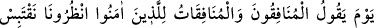
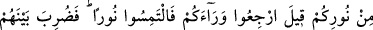
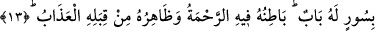
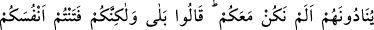
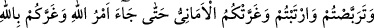
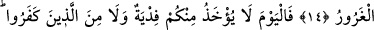
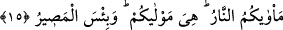
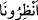

ARKANIZA DÖNÜN DE
BİR IŞIK ARAYIN!
13. Münâfık erkeklerle münâfık kadınların, mü’minlere: Bizi bekleyin,
nûrunuzdan bir parça ışık alalım, diyeceği günde kendilerine: Arkanıza dönün de
bir ışık arayın! denilir. Nihâyet onların arasına, içinde rahmet, dışında azap bulunan
kapılı bir sur çekilir.
14. Münâfıklar onlara: Biz sizinle beraber değil miydik? diye seslenirler.
(Müminler de) derler ki: Evet, ama siz kendi başınızı belâya soktunuz; fırsat
beklediniz; şüpheye düştünüz ve kuruntular sizi aldattı. O çok aldatan (şeytan)
sizi, Allah hakkında bile aldattı. Nihâyet Allah’ın emri gelip çattı!
15. Bugün artık ne sizden ne de inkâr edenlerden bedel kabul edilir, varacağınız
yer ateştir. Size yaraşan odur. Ne kötü bir dönüş yeridir!
“Münâfık erkeklerle münâfık kadınların,” “müminlere”; yâni inanılması gereken
bütün hususlara samîmî bir tarzda îmân edenlere “Bizi bakın” derler. Yâni bizi
bekleyin. Bu sözü, yaya oldukları halde, mü’minler şimşekler gibi çok hızlı bir şekilde
binekler üzerinde geçerlerken söylerler. Yahut âyetin mânâsı şöyledir: “Bize bakın”
derler. Çünkü mü’minler, münâfıklara baktıklarında yüzleriyle onlara dönmüş olacaklar
ve onların önlerindeki nurdan münâfıklar aydınlanmış olacaklar. “Bize bu veche göre
bakın” ifâdesi, bakışın onlardan uzak tutulması ya da onlara ulaşması bakımından
gözdeki bakışın kendisinden başkasına taşmaması ve sadece kendisiyle sınırlı kalması
demektir.
Kıraat imamlardan Hamza, kelimeyi, “
” şeklinde okumuştur. Bu takdirde mânâ:
“Bize mühlet verin” demektir. Çünkü münâfıkların yetişebilmeleri için mü’minlerin
yavaş gitmeleri, onları beklemek ve mühlet vermek mânâsına gelir.
“Nûrunuzdan bir parça ışık alalım” Yâni, o nûrunuzdan aydınlanıp sizinle aydınlık